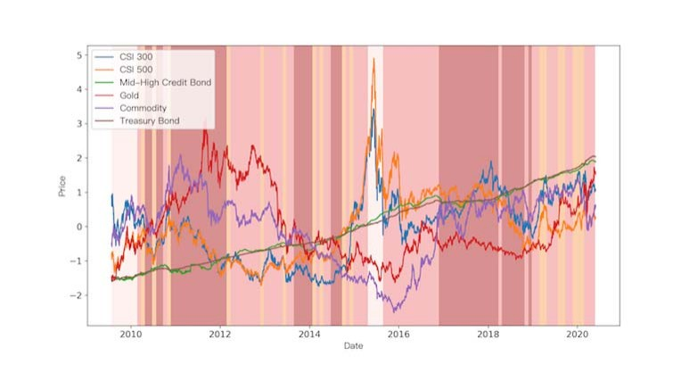
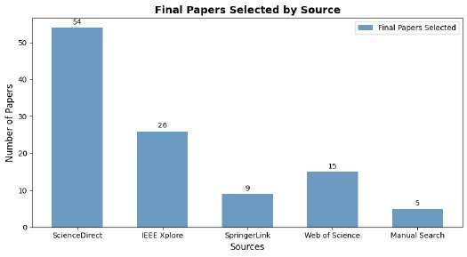
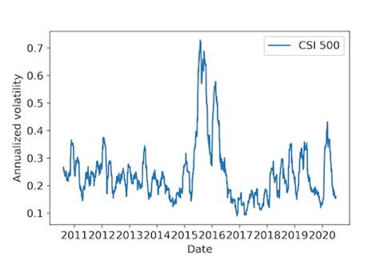
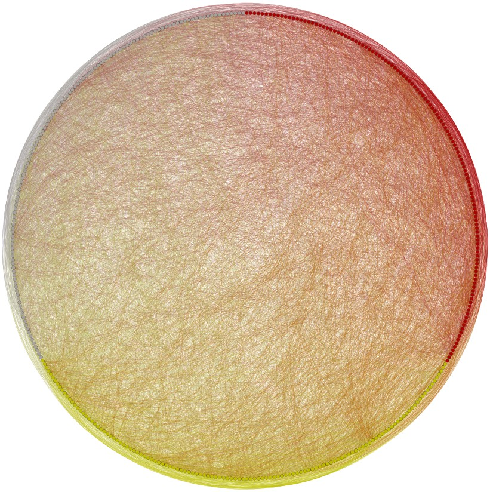
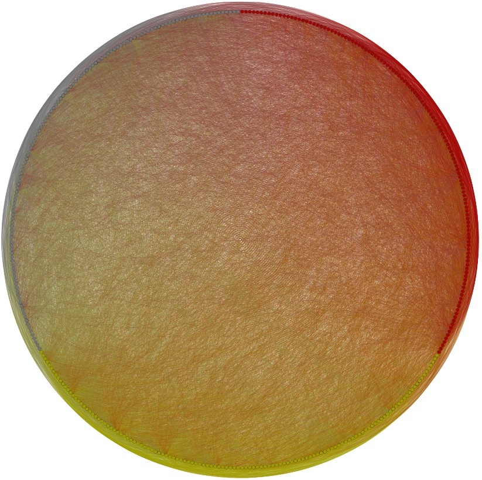
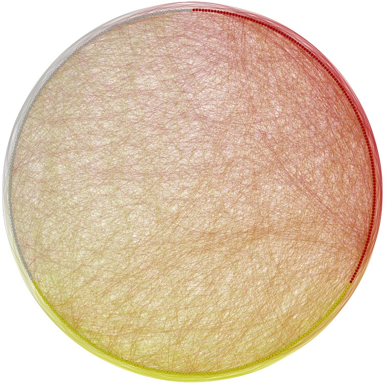
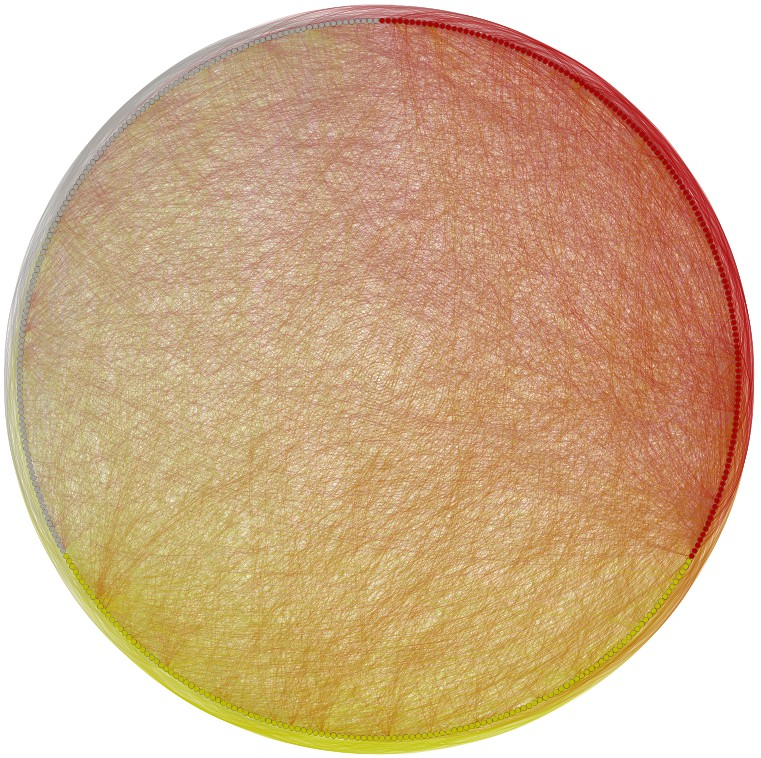

2020 IEEE International Conference on Big Data (Big Data)
Explainable Machine Learning for Regime-Based
Asset Allocation
Ruoyun Zhang
Data Center
China Asset Management Co.,Ltd
Beijing,100033,China
rz1495@nyu.edu
Chao Yi
Data Center
China Asset Manangement Co.,Ltd
Beijing,100033,China
yic@chinaamc.com
Yixin Chen
Data Center
China Asset Management Co.,Ltd
Beijing,100033,China
chenyx@chinaamc.com
Abstract—This paper explores an explainable AI model in the
financial industry. Macroeconomic and market data serve as
inputs of Hierarchical Clustering to distinguish among different
economic regimes. Compared with traditional models such as
Investment Clock, this method can adjust the classification
standard in time according to recent market sentiment. The
regime, therefore, can be interpreted by not only macro indicators
but also investors’ mood swings using Artificial Intelligence. When
we compute the statistical characteristics of returns of each asset,
we find that they can be well distinguished among regimes. This
method can also identify the abnormally large wave of the stock
market from 2015 to 2016 by separating it as an unusual regime,
which cannot be realized by traditional methods. The clustering
technique enables us to explain and understand the current
market status and predict different assets’ performances.
Therefore, thanks to the superior interpretability of AI, the mean
and variance of returns in each regime are estimated and viewed as
viewpoints of the Black-Litterman asset allocation model to
construct portfolios. To simulate the real situation, a dynamic
backtesting method is used and asset weights change because of
the rolling time windows. The results show that equipped with a
simple timing strategy, the clustering technique can improve the
results and yield excess returns. Some other machine learning
techniques are also applied in an attempt to improve the model.
Keywords—Hierarchical Clustering, asset allocation, regime-
switching, machine learning, explainable AI
I. I
NTRODUCTION
Asset allocation optimization is one of the most important
research fields in asset management. In the 1950s, Markowitz
brought up the mean-variance model, seeking to maximize
expected return given level of risk or minimize risk with a
certain level of return. From then on, asset allocation started to
change from simple methods such as equal-weighted or 60/40
rule, to the quantitative era. The optimal weights of the Black-
Litterman model[1], an advanced model based on the mean-
variance model, was explained by Guangliang He and Robert
Litterman in 2002. They believed that it combines the market
equilibrium and the view of investors: the weights increase when
the view is more bullish and the magnitude increases as an
investor becomes more confident about the view[2]. Research is
conducted on the Black-Litterman model[3][4][5]. The
Bayesian method used in the Black-Litterman model gives it
great flexibility. Investors can inject their subjective views based
on their experiences to impact the model results.
Due to the explosion of large amounts of data, the passion
for applying diversified data in asset allocation has been ignited.
In addition to market prices, macroeconomic data has been
widely used in multiple models for asset allocation research.
James Chong and G. Michael Phillips incorporated their own
factor economic climate rating and set up Eta profiles to depict
sensitivity and responsiveness of portfolio to economic
factors[6]. Regime-based asset allocation based on macro data
is also popular[7]. Miroslav Kollar proposed in an article that
rebalancing the portfolio based on macroeconomic regimes
might produce more stable returns with lower volatility than the
business cycle-neutral approach[8]. Another type of data,
market sentiment, is also mentioned in various investing
strategies[9][10]. Haiqiang Chen et al. created a sentiment index
to identify market regimes[11]. Lorenzo et al. built a public
mood-driven model for portfolio manangement[12]. As
machine learning becomes popular, new techniques are
introduced. Thomas Raffinot claimed that hierarchical
clustering can be used to group different types of assets with
similar structures[13]. Derek Snow summarized several
portfolio weight optimization methods using the machine
learning techniques, including supervised, unsupervised, and
reinforcement learning[14].
In this paper, enlightened by research papers indicated
above, we introduce the monthly market technical indicators
along with macroeconomic indicators to cluster the economy
each month into four regimes. For the regime of the current time
point, we extract historical price information of all assets in the
regime to calculate estimated mean and covariance of return,
using them as priors to get the posterior mean and covariance in
the Black-Litterman model and obtain portfolio weights. The
clustering and asset allocation process can be achieved
dynamically, using price information no later than the current
time. In addition, we innovatively incorporate the selection of
objective functions using a simple timing strategy when
realizing the Black-Litterman optimization. At the end of each
month, we compute the asset weights and trade at the beginning of
next month. Using the WINDdatabase, the backtesting shows that
this strategy achieves an annual return of 22.53% and a Sharpe
ratio of 1.06 from August 2010to May 2020, which beats
2020 IEEE International Conference on Big Data (Big Data) | 978-1-7281-6251-5/20/$31.00 ©2020 IEEE | DOI: 10.1109/BigData50022.2020.9378332
978-1-7281-6251-5/20/$31.00 ©2020 IEEE5480
Authorized licensed use limited to: SOUTHERN METHODIST UNIV. Downloaded on January 12,2026 at 02:15:14 UTC from IEEE Xplore. Restrictions apply.
the equal-weighted benchmark model and classical Black-
Litterman model sticking to only one objective function.
II. R
EGIME SWITCHING
A. Merill Lynch Investment Clock
Merill Lynch mentioned investment clock theory first in one
of their reports in 2004[15]. The business cycle can be separated
into 4 phases: reflation, recovery, overheat, and stagflation.
Specific asset types can outperform the others in each phase.
·
Stagflation: GDP growth slows but inflation remains
high. A sharp rise in the unemployment rate will break
the cycle. Cash is the best asset.
·
Overheat: High inflation rises after robust economic
growth. Government and Central Bank usually increase
taxes and interest rates to reduce loan size. Commodities
are the best assets.
·
Recovery: The economy recovers after the recession.
Indicators such as real GDP, employment rate, and
corporate profit grow fast. Stocks are the best assets.
·
Reflation: GDP growth is relatively slow and inflation is
low. The central bank lowers short-term rates in an
attempt to stimulate growth and inflation. Bonds are the
best assets.
B. Clustering Based on Macro and Technical Factors
Although investment clock theory has realistic meaning, in
a time period when inflation and business are relatively stable,
its effect is weakened. In addition, the criteria for defining each
phase are relatively vague, and the types ofinvestment assets are
limited, which cannot be directly used in real-time trading
strategies. Inspired by its logical framework, a model that
includes more macro factors and reflects the economic status
comprehensively is proposed. Economic status can be divided
into 4 categories using Hierarchical Clustering. Hierarchical
Clustering creates a nested clustering tree by calculating the
similarity of data points. After defining the Euclidean distance,
it merges the two nearest ones into one category and iterates this
process repeatedly until all data points are merged into one
category. We can produce any number of categories during the
clustering process. There are many ways to calculate the
proximity between two data points. Here, the Ward algorithm is
used to minimize the increment of the sum of squared deviations
after the two clusters are merged.
In order to better verify the effectiveness of clustering, we
select representative major asset indexes as follows: CSI 300
Index, CSI 500 Index, CSI Mid-High Credit Bond Index,
Shanghai Securities Treasury Bond Index, South China
Commodity Index, South China Gold index. The macro factors
mainly include the following categories:
·
Inflation indicators: CPI year-on-year, PPI year-on-
year
·
Money supply indicator: M2 year-on-year
·
Interest rate indicators: 1-year Government Bond
Yield, Maturity Spread (10-year government bond yield
minus 1-year government bond yield)
Since the interest rate is daily frequency data, we need to
convert it into the monthly frequency and take the monthly
median as the monthly value.
In addition to the above indicators, we also test some leading
indicators, such as power generation, consumer confidence,
CICC CMI prosperity index, year-on-year fixed asset
investment, etc. However, these indicators hardly improve the
results and reduce annual returns, therefore abandoned in our
model.
Taking into account the high sensitivity to new information
and high volatility of stocks’ price, and their close relationships
with various markets, we calculate the 15-day Momentum
(MOM) and 12-day Relative Strength Index (RSI) of the CSI
300 and CSI 500 indexes and take the difference between the
maximum and the minimum value monthly to create short-term
market technical indicators to reflect market sentiment and
volatility. We have tried to take the monthly median, but the
backtesting results are not as good as the difference between the
maximum and minimum, so the latter is used. It should be noted
here that due to the differencesin thepublication time of various
economic indicators and the lag of monthly indicators, except
for interest rates and market-related indicators, all other
indicators are taken from the value of the previous month.
Macroeconomic indicators are noisy. In order to analyze
their periodicity, we perform hp filtering on all non-technical
indicators. All indicators are then standardized. After data
preprocessing, there is a vector with indicators as its elements to
describe the economic status for each month. We cluster the
vectors, divide the business cycle into 4 regimes, and collect the
price data of assets in each regime. Fig. 1 below shows the daily
average logarithmic return of four clustering regimes during the
period from August 1, 2009, to May 31, 2020.
Obviously, stocks have the biggest changes in different
conditions, and the performances of CSI 300 and CSI 500 tend to
be quite similar, which confirms their strong correlation.
Commodities and gold show a relatively strong and negative
·
Economic growth indicators: Output Growth of
Industries year-on-year, PMI
Fig. 1. Daily average log returns of each regime
5481
Authorized licensed use limited to: SOUTHERN METHODIST UNIV. Downloaded on January 12,2026 at 02:15:14 UTC from IEEE Xplore. Restrictions apply.
correlation in regime 3. Government bonds and credit bonds are
not highly distinguishable in different regimes. The statistical
characteristics of regime-based data clusters verify the
effectiveness of the clustering technique. For the regime in
which stocks have good performance, such as regime 2, the
performance of bonds is relatively unsatisfactory. This negative
correlation isreasonable sinceduringthe time when stocks make
great profits, people tend to invest their money in stocks while
exiting from the bonds market with lower returns. However,
when stocks experience depression, investors become panic and
transfer their money to safe assets like gold. Regime 4 in the
graph shows this situation.
Fig. 2 shows the normalized price series of all assets
corresponding to clustering regimes from the beginning to the
end of the backtest period. The four background colors represent
four regimes.
It can be seen that the regime transitions are relatively
infrequent, and the unusual rise and fall of the stock market
between 2015 and 2016 have caused this part to be regarded as a
single regime. From the end of 2018 to the present, the regime has
changed regularly.
III. D
YNAMIC
R
EGIME
-
SWITCHING
A
SSET
A
LLOCATION
A. Markowitz Mean-Variance Model
The Markowitz Mean-Variance (MV) model calculates the
effective frontier of the portfolio based on the expected return
and the covariance matrix of the input assets, so as to determine
the portfolio that meets the optimization goal. The optimization
objectives are diverse: minimizing risk when the expected return is
certain; maximizing the Sharpe ratio; maximizing portfolio
return under a given risk level.
However, the MV model is very sensitive to the inputs,
especially expected return, which causes problems in practical
application. The error of the estimated historical return is not
insignificant and minimal estimation error of the data can cause
the calculated optimal investment portfolio to deviate greatly
from the theoretical optimal. In other words, this model lacks
stability.
B. Black-Litterman Model
In 1992, the Black-Litterman (BL) asset allocation model
based on the previous MV model was first proposed by Fischer
Black and Robert Litterman of Goldman Sachs, which greatly
improved the stability and practical value.
The model first uses the Capital Asset Pricing Model
(CAPM) theory proposed by Sharpe et al. to calculate the
equilibrium return of the market by observing the asset weights in
the equilibrium market status. Taking the equilibrium return as a
priori, it integrates the investor’s subjective viewpoints of return
to obtain the posterior return using the Bayesian method and then
brings it into the Markowitz model to find the final optimal
weight. This model effectively mitigates the errors caused by
the direct use of mean estimation of historical returns and can be
adjusted flexibly and timely.
Fig. 2. Price series after normalization with regimes as background colors
Assuming that the market equilibrium weight is calculated
as the ratio of investment product market value and total market
value, denoted as
w
eq
, the return of each investment product
under the market equilibrium status, that is, the prior expected
return would be:
m
0
=
dSw
eq
(1)
Where
S
is the covariance matrix and
d
is a real number.
BL model has an opinion matrix P, which represents the
opinion of absolute or relative return, and a vector Q, which
represents the magnitude of return. For example, the return of
investment product A is 2% higher than that of B, then
P
m
=
Q
(2)
Where P=[1,-1], Q=[0.02]. Let the prior covariance matrix
be τ
Σ
. The diagonal matrix
Ω
represents the confidence of each
viewpoint, ranging from 0 to 1. As a result, the posterior
expected return vector combined with subjective views is:
m
p
=((
tS
)
−1
+(
R
T
W
−1
R
)
−1
((
tS
)
−1
m
0
+
R
T
W
−1
Q
)
(3)
Black-Litterman’s optimal portfolio weight is obtained by
the MV model using the posterior expectation and covariance as
inputs.
In our model, δ is set to 2.5, and τ is set to 1. After regime
division, we take the monthly historical daily average
logarithmic return of each regime as an absolute point of view
and set the confidence level to 0.9 to obtain the posterior
expected return. The market equilibrium weight is roughly
equally divided, with CSI 300 and CSI 500 accounting for 0.2,
and the rest accounting for 0.15. MV has a variety of objective
optimization functions. The most classical ones are minimizing
variance and maximizing the Sharpe ratio. During the
backtesting, we found that thevolatilityof stocks can reach40%,
while the volatility of bonds is stable and remains less than 1%.
The excessively high volatility of stocks makes bonds have an
absolute advantage in the MV investment portfolio when using
minimum variance or maximum Sharpe ratio as the objective
function. Although the entire portfolio has been rising steadily
for a long time, it mainly focuses on bonds. The return is also
roughly the same as bonds. The results are shown in Fig. 3.

5482
Authorized licensed use limited to: SOUTHERN METHODIST UNIV. Downloaded on January 12,2026 at 02:15:14 UTC from IEEE Xplore. Restrictions apply.
Fig. 3. Cumulative return of maximum sharpe portfolio and equal-weight
benchmark
Under normal circumstances, profit and risk are positively
correlated. Risky stocks, therefore, can generate more excess
returns in specific time periods. We hope to increase the weights of
stocks reasonably and solve the overconcentrating problem. To
this end, the following attempts have been made:
·
Set a range for the weights of assets, e.g., the weights of
bonds not exceeding 0.5. In this way, the sum of bonds’
weights is kept at the maximum value that can be
obtained, and the remaining weight is transferred to
other safer assets, such as gold. If we want to increase
the weights of stocks, too many parameters need to be
set, and the calculation of the model is of little
significance.
·
The L2 regularization penalty is added to the model, and
the regularization coefficient γ is adjusted so that the
weight of each asset is not 0. For the minimum variance
objective, the optimization objective function changes
from min
w
T
Sw
to min
w
T
Sw
+
gw
T
w
. Even if γ is small, the
effect is significant. However, almost all of the six
assets will reach a relatively high proportion, and there
is little difference from an equal-weighted portfolio.
·
Considering a compromise existing between Sharpeand
return: return is often small when Sharpe is the largest,
and when Sharpe is small, the volatility becomes high
so return may increase accordingly. We try to weigh
between Sharpe and return. Therefore, we adjust the
parameter γ, calculate the minimum variance portfolio
weight under each γ, and save the return and Sharpe of
it. Then we take the portfolio weight with the largest
Sharpe ratio among those whose returns are greater than
the median of all returns. This method does not perform
so well as the equal-weighted benchmark. One
possibility is that the existence of γ reduces the overall
Sharpe and return. It is unreasonable to directly use the
expectations obtained from the model as a prediction of
the future.
·
Smooth the logarithmic return to artificially reduce the
volatility of stock assets. The effect is not obvious, and
the volatility of stock assets is still much greater than
other assets.
The above attempts haveproblems and cannot be used in our
backtest model. In our test, if the risk level of the investment
portfolio can be fixed, such as 30%, the weight of the stock can
increase with maximum return objective function. However,
there is still a problem if we use this function all the time: even
when the stock volatility is not that large,the model always turns to
risky assets, which makes the portfolio drawdown increase.
Based on these observations, we propose the following
innovative rotation model.
C. Rotation of Objective Functions
Fig. 4 shows the annualized volatility with a 30-day rolling
window of stocks from August 2010 to May 2020. It is
observed that stocks have volatility exceeding 20% in certain
time periods. At this time, a relatively large price rise and fall
provide us with obvious profitable opportunities. Therefore, we
hope that the model can appropriately bear risks to obtain
higher returns when the stock market volatility is high. For this
reason, we set the rotation of the objective optimization
functions, which is a simple timing strategy. When the volatility
of the stock market exceeds a certain value, say 20%, and there
is a trend of upward breakthrough, we change the objective
function to seeking maximum return under the risk level of 20%.
The upward breakthrough trend is defined here as the current
stock price being higher than the average stock price of the
previous ten days. This method greatly increases the holdings
of stocks at this time and brings significant excess returns.
D. Other Attempts in Machine Learning Techniques
Instead of using historical returns, we also tried to add other
machine learning models to predict returns and observe whether
they can be combined with clustering to exert greater utility.
·
Use the macro and technical indicators from the current
month to the previous 20 months as features, and
whether price increases or decreases next month as the
label to train the SVM model and make the forecast.
There are three ways to use SVM to predict results:
a) Inputs as BL viewpoints. When the forecast is increase,
set a higher return viewpoint for this asset. It performs
slightly worse than clustering model.
b) Used alone (without joining the BL model). For all
assets that are forecasted as increase, equally divide
the portfolio. It cannot beat the equal-weighted
benchmark.
c)Combined with clustering, where the clustering
weight and SVM weight (equal division of rising
assets) account for &fraq12;.
The graphs in Fig.5 show the cumulative returns of three
strategies. Obviously, the accuracy of the prediction of
the SVM itself is not high, and the results are not greatly
improved. SVM is not included in the final model.
Fig. 4. Annualized volatility of 30-day rolling window of CSI 300 & CSI
500


5483
Authorized licensed use limited to: SOUTHERN METHODIST UNIV. Downloaded on January 12,2026 at 02:15:14 UTC from IEEE Xplore. Restrictions apply.
Fig. 5. Comparison of benchmark and strategy a) b) & c)
·
Using the same features data as mentioned, and setting
the step length to 20, the LSTM model is used to predict
returns. The forecast results are regarded as the
viewpoints of the BL model, and the forecast errors are
regarded as the viewpoints’ errors. Due to the lack of
monthly frequency data and the random noise, this
model cannot learn the trend well and is not included in
our final model.
IV. E
MPIRICAL RESULTS
According to the above, we calculate the updated weights at
the endof each month from August 2010 to May 2020andadjust
the positions by trading at the beginning of the next month. In
order to judge the positive effects of clustering and model
objective functions rotation, we use an equal-weighted model
and BL model with a single objective function as benchmarks
for comparison. Fig. 6 displays our backtesting results. The first
row depicts the changes in asset weights over time. Different
colors represent different assets. From left to right, the models
are the maximum Sharpe model, maximum return given risk
model, and the rotation model respectively. The change of
weights of the rotation model is morereasonablethan theothers.
For the maximum Sharpe model, the risk aversion is so strong
that the portfolio focuses primarily on treasury bonds and credit
bonds, which are denoted by pink and dark red. The weights of
the maximum return given risk model, however, rotate very
frequently and always allocate all wealth to one asset, most of
the time, stock. The rotation model can change the risk aversion
level properly and use different objective functions effectively.
The second row displays monthly returns during the whole
backtest period. The orange line represents the equal-weighted
benchmark. The return of the maximum Sharpe model vibrates
slightly around 0, displaying a safe but not profitable feature.
The return of maximum return model, on the other hand, has
high volatility and causes serious losses occasionally. Compared
with the other two, the rotation model has relatively higher
returns than the first model and is relatively more stable than the
second model.
Fig. 6. Backtesting results. The first row depicts weights evolution thorugh
time of different models. The second row displays monthly returns.
At the end of the backtest period, the cumulative return of
the equal-weighted benchmark portfolio is 21.5%. The
cumulative returnof maximum returnportfolio with 30% annual
volatility is 137.5%, and the cumulative return of the portfolio
with maximum Sharpe ratio as the objective function is 56.3%.
Combined two single objective function BL models, the
cumulative return of the rotation model is approximately
213.5%. All three BL models applying the clustering technique
significantly outperform the benchmark, and the rotation model is
significantly better than the others. Fig. 7shows the
cumulative return curve of different strategies.
Analyzing the figure, we can see that the equal-weighted
portfolio fluctuates around 0 and does not obtain obvious
additional profits. The return of maximum Sharpe portfolio has
grown steadily and is dominated by bonds’ yields, which cannot
capture the rising signals of the stock market, such as the
astonishing rise of the market in 2015. The portfolio that
maximizes returns with a fixed risk level has more violent
volatility. Although it can achieve rapid growth in a short period
of time, it also experiences sharp declines and higher risk. The
rotation model, on the contrary, has the robustness and can
quickly identify rising signals to enter the market while exit in
time when the risk is too high, turning to safer assets. Table 1
shows the evaluation indicators of each model’s performance
during the whole backtest period, and the annual risk-free
interest rate is set to be 2%.
Fig. 7. Cumulative return of different strategies
TABLE I.B
ACKTESTING RESULTS
Beta
Alpha
Sharpe ratio
Maximum
drawdown




5484
Authorized licensed use limited to: SOUTHERN METHODIST UNIV. Downloaded on January 12,2026 at 02:15:14 UTC from IEEE Xplore. Restrictions apply.
Rotation
return
Model Performance
Indicators
EqualMaximumMaximum
weightsharpereturn
Annual
2.27%5.94%14.50%22.53%
1.000.09
2.220.69
0.000.04
0.120.20
Annual
volatility
9.49%2.95%
33.80%19.30%
0.031.34
0.371.06
Information
ratio
N/A0.39
0.411.08
20.18%2.15%
31.72%8.26%
The annual return of the rotation model explicitly
outperforms the rest of them. In addition, the Alpha of this
strategy, which represents the strategy’s ability to beat the
market, is the largest among all models. The maximum
drawdown of it is constrained below 10%, much smaller than
the maximum return model achieving the second largest annual
return in the table.
V. C
ONCLUSION
The change of macroeconomic environment has a certain
ability to explain the performances of assets. Market sentiment
also explains the rise and fall of prices. The fear of future
uncertainties prompts people to flock to the gold or bonds
market when negative eventsoccur.It is not uncommon to select
assets according to investors’ reactions. Using the AI technique,
we are able to explain the market status by both the
macroeconomic environment and market sentiment. It allows us
to capture information of hotspot events such as policies or
natural disasters, which might cause great insecurity among
investors. After our analysis and data visualization, it can be
clearly seen that the AI technique successfully integrates market
and macro data in order to comprehensively recognize the
regime.
This paper sets an asset allocation framework that combines
the economic regime division by hierarchical clustering with the
Black-Litterman model. It is also found that setting up the
rotation of the objective optimization functions can solve the
imbalanced weights problem and obtain more excess returns.
Firstly, we preprocess macroeconomics data with hp
filtering and combine it with market technical indicators to
divide the economic regimes into four categories using
clustering. Then, for each regime, we assess the historical
returns’ performances of all assets and compute the empirical
expectation and covariance. They are used as viewpoints to
calculate posteriors for the BL model. BL optimization weights
are then calculated through the rotation of the objective
optimization functions to achieve dynamic asset allocation. The
results show that during the backtest period from August 2010 to
May 2020, the annualized return of the model reaches
22.53%, and the Sharperatio isabout 1.06, which is significantly
better than the equal-weighted benchmark portfolio and other
counterparties. The model integrates macro-scenarios and has
strong flexibility. It can respond to market fluctuations in a
timely manner. Experiments show that it successfully captures
two large upswing signals of the stock market and withdraws
before the plunge.
In conclusion,due to its high interpretability by visualization and
numerical analysis, an explainable AI model is incorporated
into an asset allocation strategy and performs well in the last
decade, which shows the great prospects of explainable AI in
financial industry.
A
CKNOWLEDGMENT
This work would not have been possible without the help of
all colleagues of China Asset Management Company. They
provide useful guidance during the research and inspire us in
daily interactions and communications. We also want to thank
all ofthose who review the work and make precious suggestions.
R
EFERENCES
[1] Black, Fischer, and Robert Litterman. “Global portfolio optimization,
” Financial analysts journal 48.5 (1992): 28-43.
[2] He, Guangliang, and Robert Litterman. “The intuition behind Black-
Litterman model portfolios, ” Available at SSRN 334304(2002).
[3] Martellini, Lionel, and Volker Ziemann. “Extending Black-Litterman
analysis beyond the mean-variance framework,” The Journal of Portfolio
Management 33.4 (2007): 33-44.
[4] Zhou, Guofu. “Beyond Black–Litterman: Letting the Data Speak, ” The
Journal of Portfolio Management 36.1 (2009): 36-45.
[5] Xing, Frank Z., et al. “Discovering Bayesian market views for intelligent
asset allocation, ” Joint European Conference on Machine Learning and
Knowledge Discovery in Databases. Springer, Cham, 2018.
[6] Chong, James, and G. Michael Phillips. “Tactical Asset Allocation with
Macroeconomic Factors,” The Journal of Wealth Management 17.1
(2014): 58-69.
[7] Sheikh, Abdullah Z., and Jianxiong Sun. “Regime change: Implications of
macroeconomic shifts on asset class and portfolio performance,” The
Journal of Investing 21.3 (2012): 36-54.
[8] Kollar, Miroslav. “A Sketch of Macro-based Asset Allocation,”
International Journal of Economic Sciences 2.3 (2013): 101-120.
[9] Graham, John R., and Campbell R. Harvey. “Market timing ability and
volatility implied in investment newsletters’ asset allocation
recommendations,” Journal of Financial Economics42.3 (1996): 397-
421.
[10] Clare, Andrew, et al. “The trend is ourfriend: Risk parity, momentum and
trend following in global asset allocation,” Journal of Behavioral and
Experimental Finance 9 (2016): 63-80.
[11] Chen, Haiqiang, Terence Tai-Leung Chong, and Xin Duan. “A principal-
component approach to measuring investor sentiment, ” Quantitative
Finance 10.4 (2010): 339-347.
[12] Malandri, Lorenzo, et al. “Public mood–driven asset allocation: the
importance of financial sentiment in portfolio management,” Cognitive
Computation 10.6 (2018): 1167-1176.
[13] Raffinot, Thomas. “Hierarchical clustering-based asset allocation,” The
Journal of Portfolio Management 44.2 (2017): 89-99.
[15] Greetham, Trevor, and H. Hartnett. “The Investment Clock Special
Report# 1: Making Money From Macro,” Merrill Lynch, 2004.
5485
Authorized licensed use limited to: SOUTHERN METHODIST UNIV. Downloaded on January 12,2026 at 02:15:14 UTC from IEEE Xplore. Restrictions apply.
[14] Snow, Derek. “Machine Learning in Asset Management—Part 2:
Portfolio Construction—Weight Optimization,” The Journal of Financial
Data Science 2.2 (2020): 17-24.